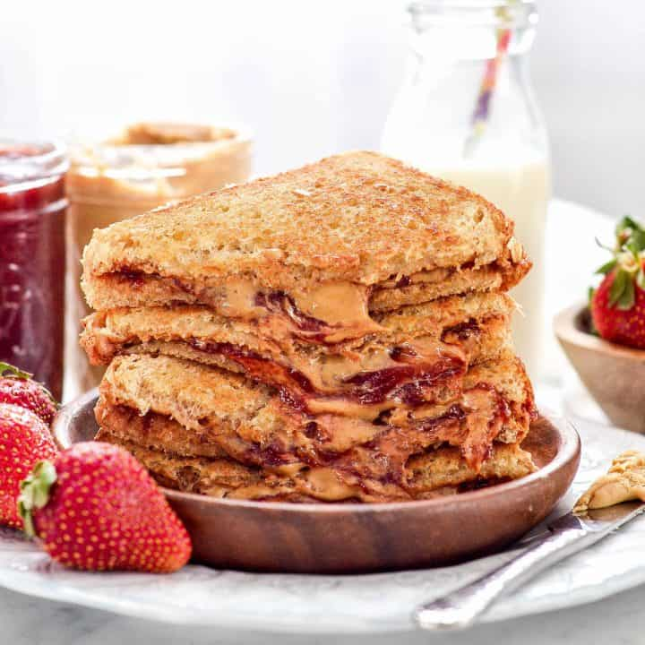

A Twist on the Classic PB&J

Full disclosure, I had a classic peanut butter and jelly sandwich for lunch every single day
during my senior year of high school. I'm convinced it's what made my boyfriend (now husband) fall in love.
Kidding! He HATES peanut butter. It's his fatal flaw.
This sandwich is a favorite of mine, from elementary school, to high school, to being pregnant and having nothing else in the house
that sounds remotely edible. We've been calling the baby "peanut", partially because they were that large at one point,
but also now because it's all they'll let me eat sometimes.
This recipe is for a stovetop grilled PB&J sandwich, which I think gives it that extra ooey, gooey grown up edge.
Ingredients
- 2 slices bread, white or whole wheat. Honestly, the softer the better here. We're not going for healthy with this.
- 3-4 Tbsp Peanut Butter. Bonus points for chunky peanut butter.
- 2 Tbsp Jelly or Jam. Strawberry is a classic for a reason. I'm a grape jelly hater.
- Butter to grease pan. It must be butter.
Recipe
- Heat skillet to medium.
- Slather one piece of bread with peanut butter, the other with jelly. Lick the knife after. I'm not judging you.
- Smack those together (good stuff on the inside).
- Grease bottom of pan with butter, and add sandwich.
- Grill for about 2 minutes, then flip and grill an additional 2 minutes.
- Remove from heat and cut into cute shapes, or devour like an animal.